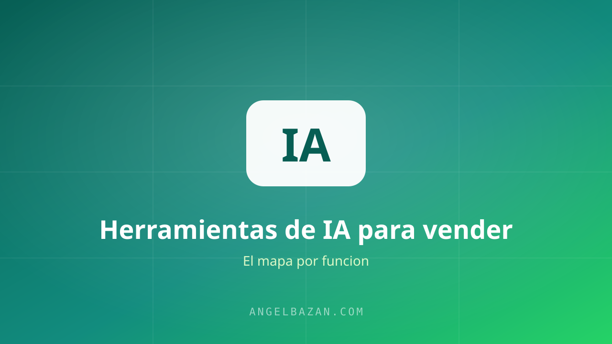

Las mejores herramientas de IA para vender más en 2026
Copy, anuncios, chat, análisis de datos y automatización: el mapa de herramientas de IA que uso para vender más sin contratar un ejército.
En este artículo
En 2026, la ventaja competitiva no la da tener IA: la da saber qué herramienta usar en cada etapa del embudo. Este es el mapa de herramientas que uso en mi negocio, ordenado por función y con mi favorita en cada caso.

El criterio: herramienta para cada etapa del embudo
No existe "la mejor IA". Existe la mejor para escribir, la mejor para conversar, la mejor para automatizar. Si eliges pensando en la tarea —no en la marca— tu embudo entero mejora. En Claude vs ChatGPT vs Gemini tienes el mapa por modelo; aquí el mapa por función.
Copy y contenido: ChatGPT, Claude y Gemini
- Claude: páginas de ventas, guiones de VSL y análisis profundos. Mi elección para texto largo.
- ChatGPT: variaciones de anuncios, titulares y respuestas rápidas. El todoterreno.
- Gemini: investigación con el buscador de Google y resúmenes en Gmail/Docs.
Anuncios y creativos: Canva AI y más
Para producción rápida de creativos: Canva AI para banners y carruseles, y herramientas de clonado de voz (ElevenLabs) para videos UGC sin grabar. El criterio es el mismo: un creativo bueno a las 2 horas vale más que uno perfecto a los 5 días.
Conversación: el bot de WhatsApp con IA
El corazón del funnel conversacional: un asistente en el WhatsApp que responde al instante, califica leads y presenta la oferta. Cualquier modelo moderno sirve; lo que importa es la base de conocimiento y las reglas de derivación a humano. Guía completa aquí.
Automatización: n8n y Zapier
Para conectar todo sin código: n8n (gratis y auto-alojado) o Zapier (rápido de montar). Los usos típicos: nuevo lead de Meta Ads → se crea el chat de WhatsApp → se registra en el CRM → se agenda el seguimiento.
Análisis: NotebookLM y los reportes con IA
Sube tus paneles, chats y reportes a NotebookLM y pídele el resumen ejecutivo con las oportunidades detectadas. La IA no sustituye tus métricas: las hace legibles. En ROAS vs ROI tienes el marco para interpretarlas.
La combinación que uso todos los días
Claude escribe el guion → ChatGPT genera las variantes de anuncio → Canva produce el creativo → n8n dispara el flujo → el bot de WhatsApp con IA conversa y cierra → NotebookLM resume lo que pasó.
Ese flujo completo cuesta menos que un empleado a tiempo parcial y trabaja 24/7. Empieza con una sola herramienta, domínala y ve sumando las demás.

Angel Bazán
Especialista en funnels, Meta Ads y WhatsApp + IA. Ayudo a negocios a vender más combinando tráfico pagado con conversaciones automatizadas.
Conoce más sobre mí →Aprende a crear y vender productos digitales con Meta Ads, WhatsApp e IA
Clases en vivo, estrategias y recursos para construir tu sistema desde cero. 🚀
Únete gratis al grupo